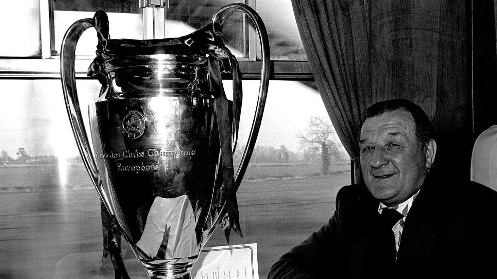
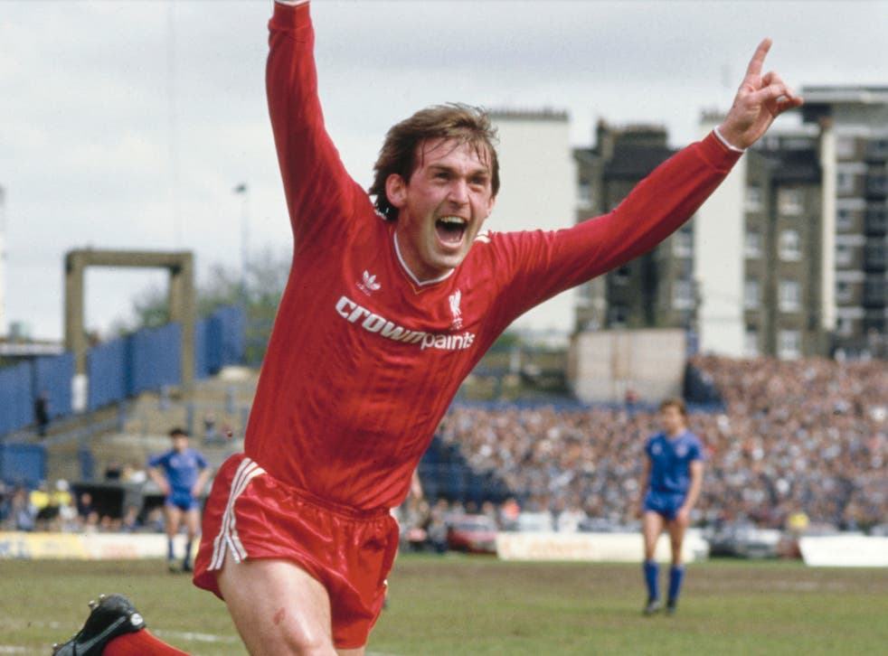
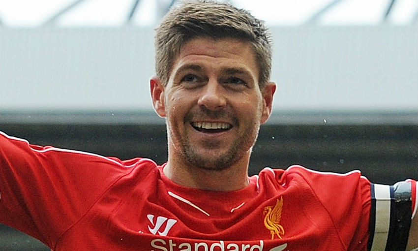

Anfield (Anfield Road before 1992). Anfield is Liverpools home arena and it has room for 54 074 fans and spectators but the record is 61 905 which was broken in a match against Wolverhampton in the FA-cup in 1952.
Bill Shankly lived 1913-1981 and was a iconic liverpool coach and he managed to win the league 3 times. He was Liverpool football clubs headcoach from 1959 to 1974.
Bob paisley took over from Shankly and was the headcoach for 9 years and in that time he managed to win alot, we won 6 league titels, 1 UEFA cup, 3 League Cups, 3 European Cups, 1 UEFA Super Cups and 6 Charity Shields. So in 9 years he won 20 trophies.
Kenny Dalglish arrived to Liverpool with big shoes to fill. In first season he has the only goalscorer in the Europacup final. Kenny ended he player carrer in liverpool with 515 matches and 172 goals
Steven Gerrard is one of the most complte footballers thats ever have played for liverpool. Few man will ever match the lagacy forged by Steven Gerrard